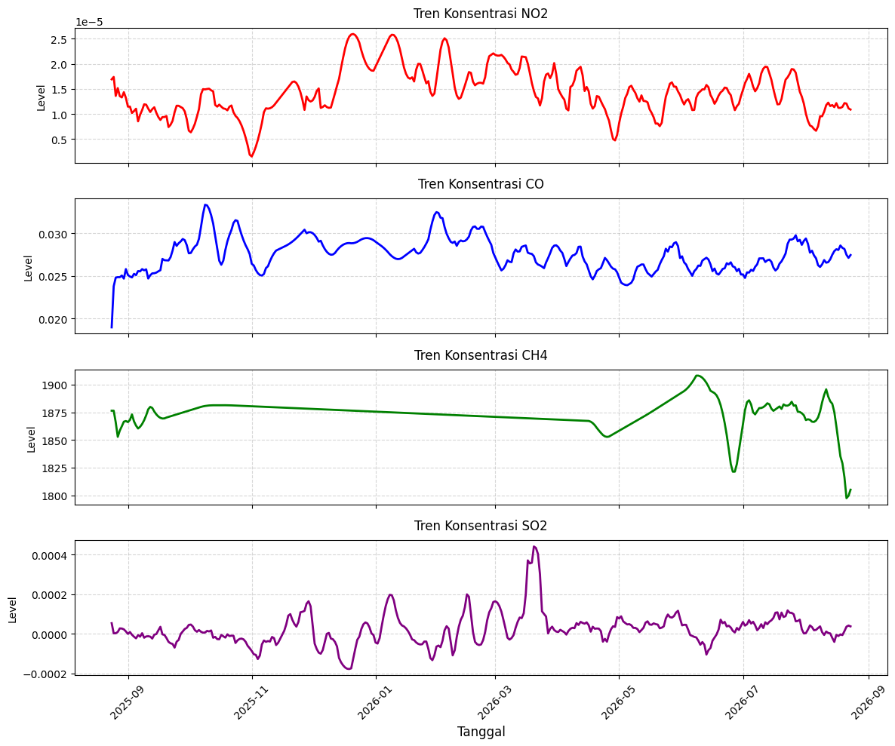
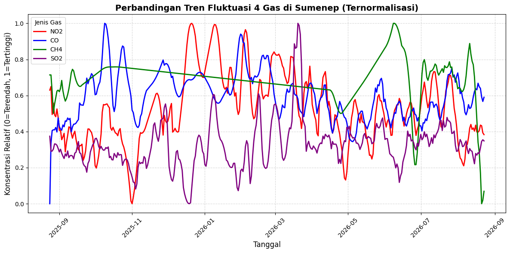

Mengamati Kualitas Udara Sumenep#
Crawling Data:#
Proses crawling (pengumpulan) data ini mengambil data kualitas udara dari satelit Sentinel-5P melalui layanan Copernicus Data Space[cite: 1]. Berikut adalah rincian ekstraksi datanya:
Lokasi Observasi: Area observasi difokuskan pada wilayah Kabupaten Sumenep, Provinsi Jawa Timur[cite: 1]. Titik koordinat poligon area meliputi wilayah dari bujur 113.738 hingga 113.910 dan lintang -7.060 hingga -6.965[cite: 1].
Periode Pengambilan Data: Data ditarik untuk periode 1 tahun, terhitung dari tanggal 24 Agustus 2025 hingga 24 Agustus 2026[cite: 1].
Total Data: Proses ekstraksi menghasilkan total 365 hari pengamatan harian untuk dianalisis[cite: 1].
Business Understanding#
Mengamati Kualitas Udara#
[Deskripsikan apa itu indeks kualitas Udara (air quality index]
[Jelaskan unsur-unsur yang menyebabkan baik/buruknya kualitas Udara (polutan)]
Unsur:
NO2
CO
CH4
SO2
Data Understanding#
Mengamati Kualitas Udara#
Indeks Kualitas Udara (Air Quality Index / AQI) Indeks Kualitas Udara (AQI) adalah ukuran atau indikator yang digunakan secara global untuk melaporkan seberapa bersih atau tercemarnya udara harian di suatu area. AQI berfokus pada dampak kesehatan yang mungkin dialami masyarakat dalam beberapa jam atau hari setelah menghirup udara yang berpolusi. Semakin tinggi nilai AQI, semakin tinggi tingkat polusi udara, yang berarti bahaya kesehatan bagi manusia dan makhluk hidup lainnya juga semakin besar.
Unsur-Unsur Polutan Kualitas Udara Kualitas udara yang buruk disebabkan oleh penumpukan gas dan partikel berbahaya di atmosfer. Dalam program ini, terdapat 4 unsur polutan utama yang diamati[cite: 1]:
NO2 (Nitrogen Dioksida): Dalam program ini, NO2 adalah salah satu unsur gas yang diekstraksi[cite: 1]. NO2 adalah gas beracun yang sebagian besar terbentuk dari emisi pembakaran bahan bakar fosil seperti knalpot kendaraan dan aktivitas pabrik. Paparan jangka panjang dapat mengiritasi saluran pernapasan.
CO (Karbon Monoksida): Program ini juga mengumpulkan data konsentrasi gas CO[cite: 1]. Gas tidak berwarna dan tidak berbau ini dihasilkan oleh pembakaran yang tidak sempurna dari kendaraan bermotor maupun mesin industri. Gas ini berbahaya karena dapat menghambat peredaran oksigen dalam darah.
CH4 (Metana): Gas metana (CH4) termasuk dalam polutan yang dianalisis di sini[cite: 1]. Metana merupakan gas rumah kaca kuat yang mempercepat pemanasan global, seringkali bersumber dari aktivitas agrikultur, peternakan, serta tempat pembuangan limbah.
SO2 (Sulfur Dioksida): Konsentrasi SO2 ikut ditarik dari data satelit[cite: 1]. Gas berbau menyengat ini umumnya dilepaskan selama pembakaran batu bara dan minyak bumi di pembangkit listrik, pabrik peleburan logam, serta dari aktivitas alam seperti letusan gunung berapi.
!pip install openeo
Collecting openeo
Downloading openeo-0.51.0-py3-none-any.whl.metadata (8.9 kB)
Requirement already satisfied: requests>=2.26.0 in /usr/local/lib/python3.13/dist-packages (from openeo) (2.32.4)
Requirement already satisfied: urllib3>=1.9.0 in /usr/local/lib/python3.13/dist-packages (from openeo) (2.5.0)
Requirement already satisfied: shapely>=1.6.4 in /usr/local/lib/python3.13/dist-packages (from openeo) (2.1.2)
Requirement already satisfied: numpy>=1.17.0 in /usr/local/lib/python3.13/dist-packages (from openeo) (2.1.3)
Collecting xarray<2025.01.2,>=0.12.3 (from openeo)
Downloading xarray-2025.1.1-py3-none-any.whl.metadata (11 kB)
Requirement already satisfied: pandas<3.0.0,>0.20.0 in /usr/local/lib/python3.13/dist-packages (from openeo) (2.2.3)
Collecting pystac>=1.5.0 (from openeo)
Downloading pystac-1.15.2-py3-none-any.whl.metadata (6.3 kB)
Collecting deprecated>=1.2.12 (from openeo)
Downloading deprecated-1.3.1-py2.py3-none-any.whl.metadata (5.9 kB)
Requirement already satisfied: geopandas>=0.14 in /usr/local/lib/python3.13/dist-packages (from openeo) (1.1.4)
Requirement already satisfied: wrapt<3,>=1.10 in /usr/local/lib/python3.13/dist-packages (from deprecated>=1.2.12->openeo) (2.3.0)
Requirement already satisfied: pyogrio>=0.7.2 in /usr/local/lib/python3.13/dist-packages (from geopandas>=0.14->openeo) (0.13.0)
Requirement already satisfied: packaging in /usr/local/lib/python3.13/dist-packages (from geopandas>=0.14->openeo) (26.3)
Requirement already satisfied: pyproj>=3.5.0 in /usr/local/lib/python3.13/dist-packages (from geopandas>=0.14->openeo) (3.7.2)
Requirement already satisfied: python-dateutil>=2.8.2 in /usr/local/lib/python3.13/dist-packages (from pandas<3.0.0,>0.20.0->openeo) (2.9.0.post0)
Requirement already satisfied: pytz>=2020.1 in /usr/local/lib/python3.13/dist-packages (from pandas<3.0.0,>0.20.0->openeo) (2025.2)
Requirement already satisfied: tzdata>=2022.7 in /usr/local/lib/python3.13/dist-packages (from pandas<3.0.0,>0.20.0->openeo) (2026.3)
Collecting pystac-core<2,>=1.15.0 (from pystac>=1.5.0->openeo)
Downloading pystac_core-1.15.2-py3-none-any.whl.metadata (1.3 kB)
Collecting pystac-ext-classification (from pystac>=1.5.0->openeo)
Downloading pystac_ext_classification-2.0.1-py3-none-any.whl.metadata (2.1 kB)
Collecting pystac-ext-datacube (from pystac>=1.5.0->openeo)
Downloading pystac_ext_datacube-2.2.1-py3-none-any.whl.metadata (1.8 kB)
Collecting pystac-ext-eo (from pystac>=1.5.0->openeo)
Downloading pystac_ext_eo-1.1.1-py3-none-any.whl.metadata (1.9 kB)
Collecting pystac-ext-file (from pystac>=1.5.0->openeo)
Downloading pystac_ext_file-2.1.1-py3-none-any.whl.metadata (1.8 kB)
Collecting pystac-ext-grid (from pystac>=1.5.0->openeo)
Downloading pystac_ext_grid-1.1.1-py3-none-any.whl.metadata (1.9 kB)
Collecting pystac-ext-item-assets (from pystac>=1.5.0->openeo)
Downloading pystac_ext_item_assets-1.0.1-py3-none-any.whl.metadata (1.9 kB)
Collecting pystac-ext-label (from pystac>=1.5.0->openeo)
Downloading pystac_ext_label-1.0.2-py3-none-any.whl.metadata (1.9 kB)
Collecting pystac-ext-mgrs (from pystac>=1.5.0->openeo)
Downloading pystac_ext_mgrs-1.0.1-py3-none-any.whl.metadata (1.8 kB)
Collecting pystac-ext-mlm (from pystac>=1.5.0->openeo)
Downloading pystac_ext_mlm-1.4.1-py3-none-any.whl.metadata (2.2 kB)
Collecting pystac-ext-pointcloud (from pystac>=1.5.0->openeo)
Downloading pystac_ext_pointcloud-1.0.1-py3-none-any.whl.metadata (1.8 kB)
Collecting pystac-ext-projection (from pystac>=1.5.0->openeo)
Downloading pystac_ext_projection-2.0.1-py3-none-any.whl.metadata (2.1 kB)
Collecting pystac-ext-raster (from pystac>=1.5.0->openeo)
Downloading pystac_ext_raster-1.1.1-py3-none-any.whl.metadata (1.9 kB)
Collecting pystac-ext-render (from pystac>=1.5.0->openeo)
Downloading pystac_ext_render-2.0.0-py3-none-any.whl.metadata (1.8 kB)
Collecting pystac-ext-sar (from pystac>=1.5.0->openeo)
Downloading pystac_ext_sar-1.0.1-py3-none-any.whl.metadata (1.8 kB)
Collecting pystac-ext-sat (from pystac>=1.5.0->openeo)
Downloading pystac_ext_sat-1.0.1-py3-none-any.whl.metadata (1.8 kB)
Collecting pystac-ext-scientific (from pystac>=1.5.0->openeo)
Downloading pystac_ext_scientific-1.0.1-py3-none-any.whl.metadata (1.8 kB)
Collecting pystac-ext-storage (from pystac>=1.5.0->openeo)
Downloading pystac_ext_storage-2.0.1-py3-none-any.whl.metadata (1.9 kB)
Collecting pystac-ext-table (from pystac>=1.5.0->openeo)
Downloading pystac_ext_table-1.2.1-py3-none-any.whl.metadata (1.8 kB)
Collecting pystac-ext-timestamps (from pystac>=1.5.0->openeo)
Downloading pystac_ext_timestamps-1.1.1-py3-none-any.whl.metadata (1.8 kB)
Collecting pystac-ext-version (from pystac>=1.5.0->openeo)
Downloading pystac_ext_version-1.2.1-py3-none-any.whl.metadata (1.9 kB)
Collecting pystac-ext-view (from pystac>=1.5.0->openeo)
Downloading pystac_ext_view-1.0.1-py3-none-any.whl.metadata (1.8 kB)
Collecting pystac-ext-xarray-assets (from pystac>=1.5.0->openeo)
Downloading pystac_ext_xarray_assets-1.0.1-py3-none-any.whl.metadata (1.9 kB)
Requirement already satisfied: charset_normalizer<4,>=2 in /usr/local/lib/python3.13/dist-packages (from requests>=2.26.0->openeo) (3.4.9)
Requirement already satisfied: idna<4,>=2.5 in /usr/local/lib/python3.13/dist-packages (from requests>=2.26.0->openeo) (3.19)
Requirement already satisfied: certifi>=2017.4.17 in /usr/local/lib/python3.13/dist-packages (from requests>=2.26.0->openeo) (2026.7.22)
Requirement already satisfied: six>=1.5 in /usr/local/lib/python3.13/dist-packages (from python-dateutil>=2.8.2->pandas<3.0.0,>0.20.0->openeo) (1.17.0)
Downloading openeo-0.51.0-py3-none-any.whl (349 kB)
━━━━━━━━━━━━━━━━━━━━━━━━━━━━━━━━━━━━━━━━ 349.2/349.2 kB 7.0 MB/s eta 0:00:00
?25hDownloading deprecated-1.3.1-py2.py3-none-any.whl (11 kB)
Downloading pystac-1.15.2-py3-none-any.whl (5.7 kB)
Downloading xarray-2025.1.1-py3-none-any.whl (1.2 MB)
━━━━━━━━━━━━━━━━━━━━━━━━━━━━━━━━━━━━━━━━ 1.2/1.2 MB 30.9 MB/s eta 0:00:00
?25hDownloading pystac_core-1.15.2-py3-none-any.whl (117 kB)
━━━━━━━━━━━━━━━━━━━━━━━━━━━━━━━━━━━━━━━━ 117.3/117.3 kB 10.2 MB/s eta 0:00:00
?25hDownloading pystac_ext_classification-2.0.1-py3-none-any.whl (7.4 kB)
Downloading pystac_ext_datacube-2.2.1-py3-none-any.whl (7.1 kB)
Downloading pystac_ext_eo-1.1.1-py3-none-any.whl (7.7 kB)
Downloading pystac_ext_file-2.1.1-py3-none-any.whl (5.8 kB)
Downloading pystac_ext_grid-1.1.1-py3-none-any.whl (3.6 kB)
Downloading pystac_ext_item_assets-1.0.1-py3-none-any.whl (3.7 kB)
Downloading pystac_ext_label-1.0.2-py3-none-any.whl (8.2 kB)
Downloading pystac_ext_mgrs-1.0.1-py3-none-any.whl (4.1 kB)
Downloading pystac_ext_mlm-1.4.1-py3-none-any.whl (13 kB)
Downloading pystac_ext_pointcloud-1.0.1-py3-none-any.whl (6.5 kB)
Downloading pystac_ext_projection-2.0.1-py3-none-any.whl (7.4 kB)
Downloading pystac_ext_raster-1.1.1-py3-none-any.whl (6.8 kB)
Downloading pystac_ext_render-2.0.0-py3-none-any.whl (5.0 kB)
Downloading pystac_ext_sar-1.0.1-py3-none-any.whl (6.5 kB)
Downloading pystac_ext_sat-1.0.1-py3-none-any.whl (4.9 kB)
Downloading pystac_ext_scientific-1.0.1-py3-none-any.whl (5.5 kB)
Downloading pystac_ext_storage-2.0.1-py3-none-any.whl (7.6 kB)
Downloading pystac_ext_table-1.2.1-py3-none-any.whl (4.7 kB)
Downloading pystac_ext_timestamps-1.1.1-py3-none-any.whl (4.6 kB)
Downloading pystac_ext_version-1.2.1-py3-none-any.whl (5.8 kB)
Downloading pystac_ext_view-1.0.1-py3-none-any.whl (4.8 kB)
Downloading pystac_ext_xarray_assets-1.0.1-py3-none-any.whl (3.9 kB)
Installing collected packages: deprecated, pystac-core, xarray, pystac-ext-xarray-assets, pystac-ext-view, pystac-ext-version, pystac-ext-timestamps, pystac-ext-table, pystac-ext-storage, pystac-ext-scientific, pystac-ext-sat, pystac-ext-sar, pystac-ext-render, pystac-ext-raster, pystac-ext-projection, pystac-ext-pointcloud, pystac-ext-mgrs, pystac-ext-label, pystac-ext-item-assets, pystac-ext-grid, pystac-ext-file, pystac-ext-datacube, pystac-ext-eo, pystac-ext-classification, pystac-ext-mlm, pystac, openeo
Attempting uninstall: xarray
Found existing installation: xarray 2025.12.0
Uninstalling xarray-2025.12.0:
Successfully uninstalled xarray-2025.12.0
Successfully installed deprecated-1.3.1 openeo-0.51.0 pystac-1.15.2 pystac-core-1.15.2 pystac-ext-classification-2.0.1 pystac-ext-datacube-2.2.1 pystac-ext-eo-1.1.1 pystac-ext-file-2.1.1 pystac-ext-grid-1.1.1 pystac-ext-item-assets-1.0.1 pystac-ext-label-1.0.2 pystac-ext-mgrs-1.0.1 pystac-ext-mlm-1.4.1 pystac-ext-pointcloud-1.0.1 pystac-ext-projection-2.0.1 pystac-ext-raster-1.1.1 pystac-ext-render-2.0.0 pystac-ext-sar-1.0.1 pystac-ext-sat-1.0.1 pystac-ext-scientific-1.0.1 pystac-ext-storage-2.0.1 pystac-ext-table-1.2.1 pystac-ext-timestamps-1.1.1 pystac-ext-version-1.2.1 pystac-ext-view-1.0.1 pystac-ext-xarray-assets-1.0.1 xarray-2025.1.1
import openeo
connection = openeo.connect("openeo.dataspace.copernicus.eu").authenticate_oidc()
Authenticated using device code flow.
aoi = {
"type": "Polygon",
"coordinates": [
[
[113.7393608, -6.9664964],
[113.9108166, -6.9658665],
[113.9026602, -7.0601733],
[113.7386148, -7.0585753],
[113.7393608, -6.9664964]
]
]
}
start_date = "2025-08-24"
end_date = "2026-08-24"
gases = ["NO2", "CO", "CH4", "SO2"]
for gas in gases:
print(f"Mulai memproses gas: {gas}")
s5post = connection.load_collection(
"SENTINEL_5P_L2",
temporal_extent=[start_date, end_date],
spatial_extent=aoi,
bands=[gas],
)
s5p_daily = s5post.aggregate_temporal_period(reducer="mean", period="day")
job_title = f"{gas}_Sumenep_1Tahun"
output_filename = f"{gas}_Sumenep_1Tahun.nc"
try:
job = s5p_daily.execute_batch(
title=job_title,
outputfile=output_filename
)
print(f"Berhasil! File tersimpan sebagai: {output_filename}\n")
except Exception as e:
print(f"Gagal memproses {gas}. Error: {e}\n")
Mulai memproses gas: NO2
0:00:00 Job 'j-2608301522174f329b5bc484c7cc7e1e': send 'start'
0:00:02 Job 'j-2608301522174f329b5bc484c7cc7e1e': queued (progress 0%)
0:00:07 Job 'j-2608301522174f329b5bc484c7cc7e1e': queued (progress 0%)
0:00:14 Job 'j-2608301522174f329b5bc484c7cc7e1e': queued (progress 0%)
0:00:22 Job 'j-2608301522174f329b5bc484c7cc7e1e': queued (progress 0%)
0:00:32 Job 'j-2608301522174f329b5bc484c7cc7e1e': queued (progress 0%)
0:00:44 Job 'j-2608301522174f329b5bc484c7cc7e1e': queued (progress 0%)
0:01:00 Job 'j-2608301522174f329b5bc484c7cc7e1e': running (progress N/A)
0:01:19 Job 'j-2608301522174f329b5bc484c7cc7e1e': running (progress N/A)
0:01:43 Job 'j-2608301522174f329b5bc484c7cc7e1e': running (progress N/A)
0:02:13 Job 'j-2608301522174f329b5bc484c7cc7e1e': running (progress N/A)
0:02:51 Job 'j-2608301522174f329b5bc484c7cc7e1e': running (progress N/A)
0:03:37 Job 'j-2608301522174f329b5bc484c7cc7e1e': running (progress N/A)
0:04:36 Job 'j-2608301522174f329b5bc484c7cc7e1e': finished (progress 100%)
Berhasil! File tersimpan sebagai: NO2_Sumenep_1Tahun.nc
Mulai memproses gas: CO
0:00:00 Job 'j-260830152659426cbe4b200664689ab5': send 'start'
0:00:02 Job 'j-260830152659426cbe4b200664689ab5': queued (progress 0%)
0:00:07 Job 'j-260830152659426cbe4b200664689ab5': queued (progress 0%)
0:00:13 Job 'j-260830152659426cbe4b200664689ab5': queued (progress 0%)
0:00:21 Job 'j-260830152659426cbe4b200664689ab5': queued (progress 0%)
0:00:31 Job 'j-260830152659426cbe4b200664689ab5': queued (progress 0%)
0:00:44 Job 'j-260830152659426cbe4b200664689ab5': queued (progress 0%)
0:00:59 Job 'j-260830152659426cbe4b200664689ab5': queued (progress 0%)
0:01:19 Job 'j-260830152659426cbe4b200664689ab5': running (progress N/A)
0:01:43 Job 'j-260830152659426cbe4b200664689ab5': running (progress N/A)
0:02:13 Job 'j-260830152659426cbe4b200664689ab5': running (progress N/A)
0:02:50 Job 'j-260830152659426cbe4b200664689ab5': finished (progress 100%)
Berhasil! File tersimpan sebagai: CO_Sumenep_1Tahun.nc
Mulai memproses gas: CH4
0:00:00 Job 'j-2608301529544ec49218d436d7ee5909': send 'start'
0:00:02 Job 'j-2608301529544ec49218d436d7ee5909': queued (progress 0%)
0:00:07 Job 'j-2608301529544ec49218d436d7ee5909': queued (progress 0%)
0:00:13 Job 'j-2608301529544ec49218d436d7ee5909': queued (progress 0%)
0:00:21 Job 'j-2608301529544ec49218d436d7ee5909': running (progress N/A)
0:00:31 Job 'j-2608301529544ec49218d436d7ee5909': running (progress N/A)
0:00:44 Job 'j-2608301529544ec49218d436d7ee5909': running (progress N/A)
0:00:59 Job 'j-2608301529544ec49218d436d7ee5909': running (progress N/A)
0:01:19 Job 'j-2608301529544ec49218d436d7ee5909': running (progress N/A)
0:01:43 Job 'j-2608301529544ec49218d436d7ee5909': running (progress N/A)
0:02:13 Job 'j-2608301529544ec49218d436d7ee5909': running (progress N/A)
0:02:50 Job 'j-2608301529544ec49218d436d7ee5909': finished (progress 100%)
Berhasil! File tersimpan sebagai: CH4_Sumenep_1Tahun.nc
Mulai memproses gas: SO2
0:00:00 Job 'j-2608301532504b5c91debf371056d113': send 'start'
0:00:02 Job 'j-2608301532504b5c91debf371056d113': created (progress 0%)
0:00:07 Job 'j-2608301532504b5c91debf371056d113': queued (progress 0%)
0:00:14 Job 'j-2608301532504b5c91debf371056d113': queued (progress 0%)
0:00:22 Job 'j-2608301532504b5c91debf371056d113': running (progress N/A)
0:00:31 Job 'j-2608301532504b5c91debf371056d113': running (progress N/A)
0:00:44 Job 'j-2608301532504b5c91debf371056d113': running (progress N/A)
0:00:59 Job 'j-2608301532504b5c91debf371056d113': running (progress N/A)
0:01:19 Job 'j-2608301532504b5c91debf371056d113': running (progress N/A)
0:01:43 Job 'j-2608301532504b5c91debf371056d113': running (progress N/A)
0:02:13 Job 'j-2608301532504b5c91debf371056d113': running (progress N/A)
0:02:50 Job 'j-2608301532504b5c91debf371056d113': running (progress N/A)
0:03:37 Job 'j-2608301532504b5c91debf371056d113': finished (progress 100%)
Berhasil! File tersimpan sebagai: SO2_Sumenep_1Tahun.nc
!pip install netCDF4
Requirement already satisfied: netCDF4 in /usr/local/lib/python3.13/dist-packages (1.7.4)
Requirement already satisfied: cftime in /usr/local/lib/python3.13/dist-packages (from netCDF4) (1.6.5)
Requirement already satisfied: certifi in /usr/local/lib/python3.13/dist-packages (from netCDF4) (2026.7.22)
Requirement already satisfied: numpy>=1.21.2 in /usr/local/lib/python3.13/dist-packages (from netCDF4) (2.1.3)
import netCDF4
import os
import numpy as np
import pandas as pd
from functools import reduce
gases = ["NO2", "CO", "CH4", "SO2"]
dataframes = []
for gas in gases:
file_path = f"{gas}_Sumenep_1Tahun.nc"
if not os.path.exists(file_path):
print(f"File {file_path} tidak ditemukan. Lewati...")
continue
ds = netCDF4.Dataset(file_path)
available_vars = ds.variables.keys()
time_col = "t" if "t" in available_vars else ("time" if "time" in available_vars else None)
if time_col:
time_var = ds.variables[time_col]
try:
dates = netCDF4.num2date(time_var[:], units=time_var.units)
dates = pd.to_datetime([d.strftime('%Y-%m-%d') for d in dates])
except Exception:
dates = pd.to_datetime(time_var[:])
else:
print(f"Variabel waktu tidak ditemukan di {file_path}!")
ds.close()
continue
if gas in available_vars:
data = ds.variables[gas][:]
mean_data = np.mean(data, axis=(1, 2))
df_temp = pd.DataFrame({'Tanggal': dates, gas: mean_data})
dataframes.append(df_temp)
ds.close()
if dataframes:
df_merged = reduce(lambda left, right: pd.merge(left, right, on='Tanggal', how='outer'), dataframes)
df_merged = df_merged.sort_values('Tanggal').reset_index(drop=True)
start_date = "2025-08-24"
end_date = "2026-08-24"
mask = (df_merged['Tanggal'] >= start_date) & (df_merged['Tanggal'] <= end_date)
df_filtered = df_merged.loc[mask].reset_index(drop=True)
print(f"\n Menampilkan Data Kualitas Udara ({start_date} s/d {end_date})")
print("=" * 65)
print(df_filtered.head(10))
print("...")
print(df_filtered.tail(5))
print("=" * 65)
print(f"Total hari pengamatan yang ditemukan: {len(df_filtered)} hari.")
else:
print("Tidak ada data yang berhasil diproses.")
Menampilkan Data Kualitas Udara (2025-08-24 s/d 2026-08-24)
=================================================================
Tanggal NO2 CO CH4 SO2
0 2025-08-24 0.000017 0.018958 NaN 0.000054
1 2025-08-25 0.000018 0.028619 1876.476318 -0.000049
2 2025-08-26 0.000006 NaN NaN 0.000003
3 2025-08-27 0.000020 0.025029 1813.483398 0.000029
4 2025-08-28 0.000007 0.024825 1881.046549 0.000099
5 2025-08-29 0.000012 0.026020 1882.000217 0.000023
6 2025-08-30 0.000021 0.022508 1891.446289 -0.000002
7 2025-08-31 0.000009 0.026791 NaN -0.000019
8 2025-09-01 0.000006 0.023771 NaN -0.000137
9 2025-09-02 0.000006 0.025578 NaN 0.000069
...
Tanggal NO2 CO CH4 SO2
360 2026-08-19 0.000011 0.025153 NaN -0.000075
361 2026-08-20 0.000010 0.027507 NaN 0.000061
362 2026-08-21 0.000016 0.025031 1747.230225 0.000104
363 2026-08-22 0.000009 0.028222 1871.480957 -0.000013
364 2026-08-23 0.000009 0.030486 NaN 0.000110
=================================================================
Total hari pengamatan yang ditemukan: 365 hari.
Eksplorasi Data#
visualisasi data peta#
Titik Pusat Peta: Program mengambil daftar titik koordinat batas wilayah observasi, lalu menghitung nilai rata-rata lintang dan bujur untuk dijadikan titik fokus tengah peta.
Pemetaan Poligon: Menggunakan library folium, program merender peta dasar interaktif dari OpenStreetMap.
import folium
lats = [coord[1] for coord in aoi["coordinates"][0]]
lons = [coord[0] for coord in aoi["coordinates"][0]]
center_lat = sum(lats) / len(lats)
center_lon = sum(lons) / len(lons)
m = folium.Map(location=[center_lat, center_lon], zoom_start=11, tiles='OpenStreetMap')
folium_coords = [[coord[1], coord[0]] for coord in aoi["coordinates"][0]]
folium.Polygon(
locations=folium_coords,
color='red',
weight=3,
fill=True,
fill_color='blue',
fill_opacity=0.2,
tooltip='Area Observasi (Sumenep)'
).add_to(m)
m
Deteksi dan Penanganan Missing Value#
Identifikasi: Program mendeteksi sel data yang kosong menggunakan isna().sum() dan menampilkan persentase kerusakannya. Kekosongan ini wajar terjadi pada data satelit, umumnya akibat gangguan cuaca atau tutupan awan saat citra diambil.
Interpolasi Linear: Untuk mengatasi celah tersebut tanpa membuang data, program menggunakan teknik interpolasi linear (interpolate(method=’linear’)). Metode ini mengisi nilai yang hilang dengan menarik garis lurus secara matematis antara titik data sebelum dan sesudahnya.
Pelengkapan Ekstrem: Fungsi pelengkap bfill() dan ffill() ditambahkan untuk memastikan tidak ada celah tersisa di ujung awal atau akhir hari observasi.
import pandas as pd
import numpy as np
print("1. IDENTIFIKASI MISSING VALUE")
print("-" * 40)
missing_count = df_filtered.isna().sum()
print(missing_count)
missing_percentage = (missing_count / len(df_filtered)) * 100
print("\nPersentase Missing Value (%):")
print(missing_percentage.round(2))
print("\n")
print("2. MENANGANI MISSING VALUE")
print("-" * 40)
df_dropped = df_filtered.dropna()
df_mean = df_filtered.copy()
gases = ["NO2", "CO", "CH4", "SO2"]
for gas in gases:
if gas in df_mean.columns:
mean_value = df_mean[gas].mean()
df_mean[gas] = df_mean[gas].fillna(mean_value)
df_interpolated = df_filtered.copy()
df_interpolated[gases] = df_interpolated[gases].interpolate(method='linear')
df_interpolated = df_interpolated.bfill().ffill()
print("Cek kembali Missing Value setelah menggunakan Interpolasi:")
print(df_interpolated.isna().sum())
1. IDENTIFIKASI MISSING VALUE
----------------------------------------
Tanggal 0
NO2 130
CO 129
CH4 319
SO2 97
dtype: int64
Persentase Missing Value (%):
Tanggal 0.00
NO2 35.62
CO 35.34
CH4 87.40
SO2 26.58
dtype: float64
2. MENANGANI MISSING VALUE
----------------------------------------
Cek kembali Missing Value setelah menggunakan Interpolasi:
Tanggal 0
NO2 0
CO 0
CH4 0
SO2 0
dtype: int64
Membersihkan Noise#
Konsep Filter: Data harian polusi biasanya memiliki noise berupa lonjakan tajam sesaat. Program menerapkan teknik Simple Moving Average (SMA) dan Filter Median.
Jendela 7 Hari: Fungsi .rolling(window=7).mean() menghitung rata-rata bergerak menggunakan rentang waktu 7 hari. Dengan merata-ratakan nilai selama sepekan, garis grafik menjadi lebih halus sehingga tren utama kualitas udara lebih mudah dianalisis secara visual.
import pandas as pd
import numpy as np
df_smoothed = df_interpolated.copy()
gases = ["NO2", "CO", "CH4", "SO2"]
window_size = 7
print("MENERAPKAN SMOOTHING UNTUK MENGURANGI NOISE")
print("-" * 50)
for gas in gases:
if gas in df_smoothed.columns:
df_smoothed[f"{gas}_SMA"] = df_smoothed[gas].rolling(window=window_size, min_periods=1).mean()
for gas in gases:
if gas in df_smoothed.columns:
df_smoothed[f"{gas}_Median"] = df_smoothed[gas].rolling(window=window_size, min_periods=1).median()
print("Perbandingan Data NO2 Asli vs Smoothing:")
print(df_smoothed[['Tanggal', 'NO2', 'NO2_SMA', 'NO2_Median']].head(10))
MENERAPKAN SMOOTHING UNTUK MENGURANGI NOISE
--------------------------------------------------
Perbandingan Data NO2 Asli vs Smoothing:
Tanggal NO2 NO2_SMA NO2_Median
0 2025-08-24 0.000017 0.000017 0.000017
1 2025-08-25 0.000018 0.000017 0.000017
2 2025-08-26 0.000006 0.000014 0.000017
3 2025-08-27 0.000020 0.000015 0.000017
4 2025-08-28 0.000007 0.000014 0.000017
5 2025-08-29 0.000012 0.000013 0.000014
6 2025-08-30 0.000021 0.000014 0.000017
7 2025-08-31 0.000009 0.000013 0.000012
8 2025-09-01 0.000006 0.000011 0.000009
9 2025-09-02 0.000006 0.000011 0.000009
Membuat dan menampilkan Grafik#
import matplotlib.pyplot as plt
import matplotlib.dates as mdates
fig, axes = plt.subplots(nrows=4, ncols=1, figsize=(12, 10), sharex=True)
colors = {"NO2": "red", "CO": "blue", "CH4": "green", "SO2": "purple"}
gases = ["NO2", "CO", "CH4", "SO2"]
for i, gas in enumerate(gases):
sma_column = f"{gas}_SMA"
if sma_column in df_smoothed.columns:
axes[i].plot(df_smoothed['Tanggal'], df_smoothed[sma_column],
color=colors[gas], linewidth=2)
axes[i].set_title(f'Tren Konsentrasi {gas}', fontsize=12, pad=10)
axes[i].set_ylabel('Level')
axes[i].grid(True, linestyle='--', alpha=0.5)
axes[3].set_xlabel('Tanggal', fontsize=12)
axes[3].xaxis.set_major_formatter(mdates.DateFormatter('%Y-%m'))
plt.xticks(rotation=45)
plt.tight_layout()
plt.show()

import matplotlib.pyplot as plt
import matplotlib.dates as mdates
df_normalized = df_smoothed.copy()
gases = ["NO2", "CO", "CH4", "SO2"]
colors = {"NO2": "red", "CO": "blue", "CH4": "green", "SO2": "purple"}
for gas in gases:
sma_column = f"{gas}_SMA"
if sma_column in df_normalized.columns:
min_val = df_normalized[sma_column].min()
max_val = df_normalized[sma_column].max()
df_normalized[f"{gas}_Norm"] = (df_normalized[sma_column] - min_val) / (max_val - min_val)
fig, ax = plt.subplots(figsize=(12, 6))
for gas in gases:
norm_column = f"{gas}_Norm"
if norm_column in df_normalized.columns:
ax.plot(df_normalized['Tanggal'], df_normalized[norm_column],
color=colors[gas], label=gas, linewidth=2)
ax.set_xlabel('Tanggal', fontsize=12)
ax.set_ylabel('Konsentrasi Relatif (0=Terendah, 1=Tertinggi)', fontsize=12)
plt.title('Perbandingan Tren Fluktuasi 4 Gas di Sumenep (Ternormalisasi)', fontsize=14, fontweight='bold')
ax.xaxis.set_major_formatter(mdates.DateFormatter('%Y-%m'))
plt.xticks(rotation=45)
ax.legend(loc='upper left', title="Jenis Gas")
plt.grid(True, linestyle='--', alpha=0.5)
plt.tight_layout()
plt.show()
